My Top 10 Games of All Time
1. EarthBound
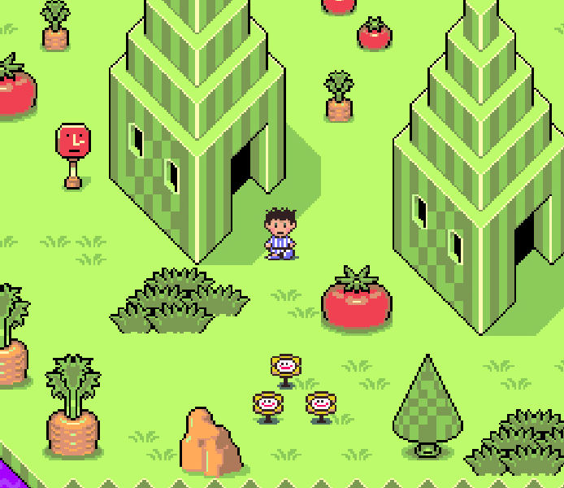If you haven't played EarthBound yet, what the heck are you even doing here??
EarthBound earned my #1 spot for its rich story, hilarious characters, and funky-fresh visual style.
It's a game that's really stuck with me, even long after I played it for the first time.
It's weird, but I feel like Earthbound has shaped so much of who I am today -
down to what I find funny and my general style when creating things. If you like robots, space aliens, zombies, mad scientists, and time travel, you gotta go play this game, like, YESTERDAY.
Bonus: One of the most iconic characters from EarthBound is "Mr. Saturn". Here's a Mr. Saturn I made out of snow last Winter.
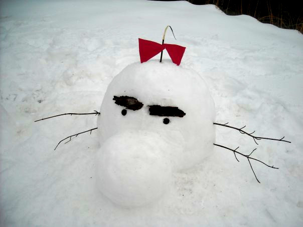2. Kirby's Dreamland
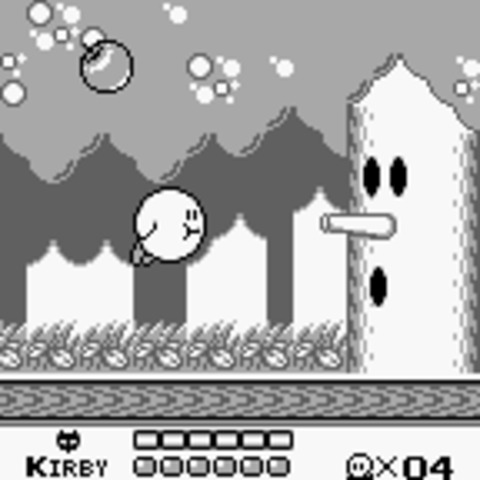Hold up, isn't this game for babies?? Actually, no. After you beat Kirby's Dreamland for the first time, you're given a code to activate the "Extra Game" mode, which is actually pretty challenging! One cool piece of trivia is that this was the first game that Masahiro Sakurai (of Super Smash Bros. fame) directed - all at the ripe old age of 19! o_O Kirby's Dreamland made it so high on this list because of its easy to pick up gameplay that never gets old and its bumpin' soundtrack. Plus, it was one of the first games I ever played, so it had a big role in getting me into gaming. BTW, the code for the Extra Game mode is UP + SELECT + B.
3. Metroid Prime
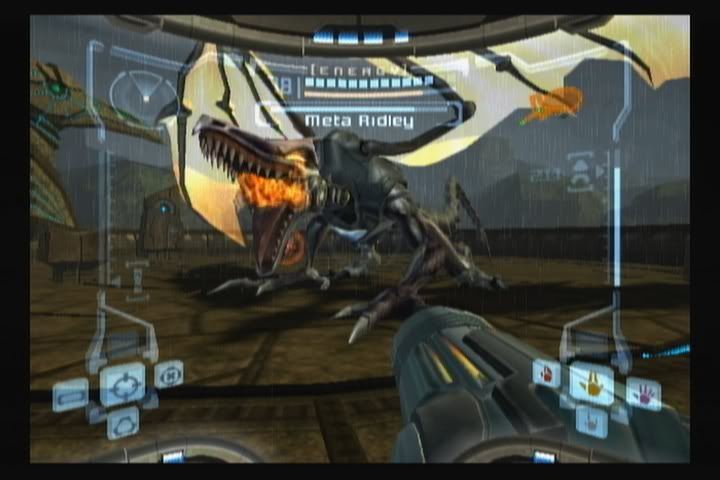Metroid Prime is hands down the most atmospheric game I've ever played. With its beautiful open world and thumping ambient soundtrack, Prime takes the Metroid formula into a whole new dimension. While the action of fighting space pirates is definitely exciting, some of my favorite moments were spent exploring the many secrets and hidden treasures sprinkled throughout Talon IV's overworld. You can use the scan visor to collect data on different enemies and items, which really adds a lot to the lore of the game. If I were stranded on a desert island and could only bring one game with me? I might just choose Metroid Prime.
4. Super Mario World 2: Yoshi's Island
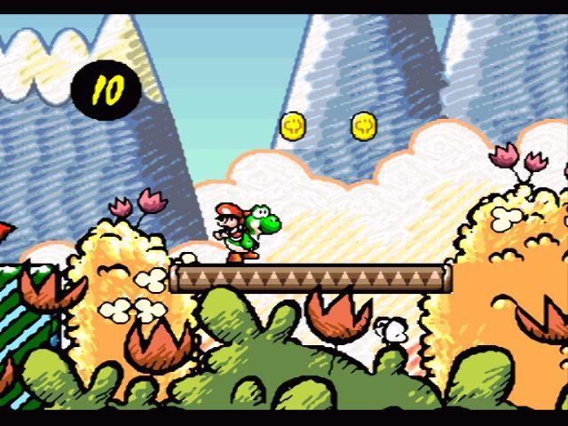I don't really know why this game is titled "Super Mario World 2", because it's so different from that game. But Yoshi's Island is, in my opinion, peak platformer goodness. The addition of ground pounds and egg throwing adds so much variety to the game. And the boss fight with Raphael the Raven is my absolute fav! Yoshi's Island earns its spot on this list for being pure fun, and for daring to break the mold with its unique hand drawn art style.
5. Wario Land 4
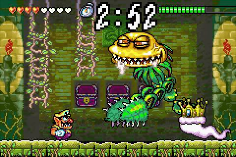I've always loved Wario, but who even is he? Mario's brother? Cousin? Evil twin? All I know is he's greasy, greedy, and totally rude, but somehow, there's something lovable about the rascal. In Wario Land 4, his insatiable desire for treasure leads him to venture into an ancient tomb filled to the brim with zany monsters. But what makes this game so great is its movement - the game feels totally fluid, and you have tons of different options for taking out foes. Also, the music is out of this world! Each level has a CD hidden somehere, and I really enjoyed finding them all. WAHHHH.
6. The Legend of Zelda: The Wind Waker
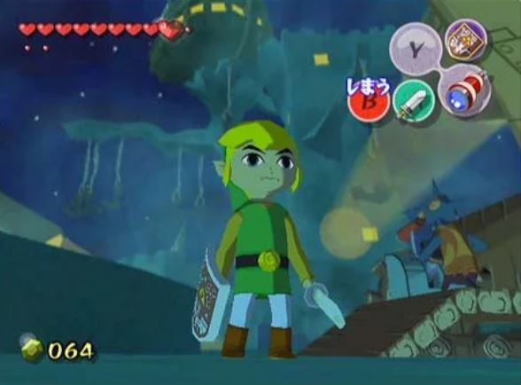When it was first revealed, a lot of people had a hard time adjusting to Wind Waker's cartoonish "cell shaded" artstyle. It's a big departure from the more serious/realistic style of previous games in the series like Majora's Mask and Ocarina of Time. But if you give Wind Waker a chance, you're in for one heck of an adventure. In this game, you befriend a talking boat and set sail on the ocean blue, exploring a vast sea sprinkled with islands to explore, monsters to face, and even a haunted pirate ship. Previous games in the series felt more linear, but Wind Waker really shook that notion up by letting you go anywhere you want, so adding it to my top 10 list was a no-brainer.
7. Pokémon Crystal
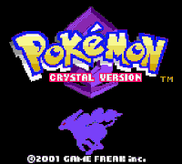
As Game Freak releases more and more entries in the Pokémon series, they start to feel the same to me. There hasn't been much innovation in a while, but we can always return to the classics. For me, Generation II is where Pokémon really hit its stride, and Crystal added some much welcomed quality of life features to the base that Gold and Silver laid down. The animated battle sprites add some personality to wild Pokémon encounters, and the new story arc featuring the mysterious legendary Pokémon Suicune kept me hooked throughout the adventure. While Gen II introduces one of my favorite Pokémon, Celebi, they were only made available to players in Japan via a limited-time mobile phone tie in.
Ah well, you can always hack Celebi back into the US version using a Game Shark!
8. Monster Truck Madness
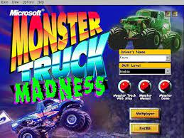
Bet you thought this list was going to be all Nintendo titles, huh? Well, I'm actually really into PC gaming as well. Monster Truck Madness is one of those hidden gems that you wouldn't expect to be so fun just from reading its title or looking at the box art. The developers really went above and beyond on this title, adding realistic physics to the trucks and totally destructable environments. If you venture off the race track, you'll find tons of hidden areas, including a medieval castle and a giant soccer field where you can hit the ball around with your truck. Each race is commentated by the in-game announcer, Army Armstrong. There are only a few pre-recorded voice clips, so they'll really get stuck in your head after a while, but luckily they're all pretty funny. The music in this game is a mix of grunge and heavy metal - you can listen to my favorite track here. BTW, these days, this game is considered by some to be "abandonware". If you're looking for a copy that'll run on modern versions of Windows, you can find it here.
Just keep it on the down-low, OK?
9. Kirby and the Amazing Mirror
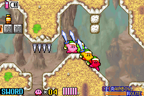Ok, back to Nintendo games now. Kirby and the Amazing Mirror is one of those games that I've loved since it came out and still cherish to this day. While Kirby Superstar did multiplayer first, Amazing Mirror upped the ante by introducing 4-player simultaneous multiplayer via the GBA Link Cable. I had tons of fun exploring the game's many unique worlds (accessed by traveling through mirrors ala Caroll's Through the Looking Glass), and there are plenty of collectibles to search for - my favorite being the spray paint cans that let you customize Kirby's color. I recently picked up some spare GBAs and copies of this game, so I'm always ready for a Kirby LAN party! I call dibs on the Cherry color though.
10. Starfox
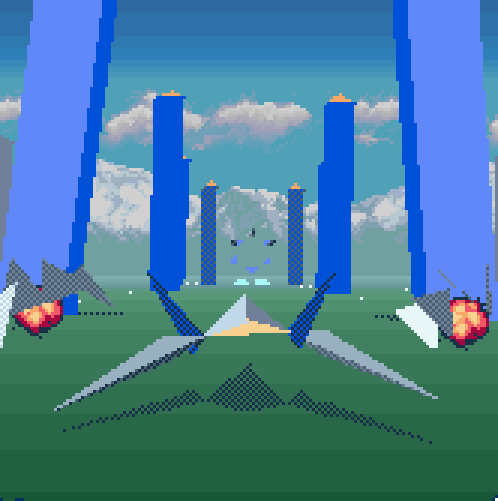It may not look like much now, but when it first released, StarFox was a technical marvel. Its low-poly vector graphics were made possible via the Super FX addon chip, which boosted the power of the Super Nintendo and allowed it to display rich (for the time) 3D graphics. StarFox is sort of like comfort food to me - one of those games I can return to whenever I want some arcadey, on-rails shooter action. Recently, the cancelled sequel "StarFox 2" was leaked online. It seems the game was almost entirely finished, so it's a shame we never got to see an official release. But at least we still have the original StarFox. The final boss Andross has always been so cool to me. Someday, I want to make a wearable mask based on Andross's in-game model.